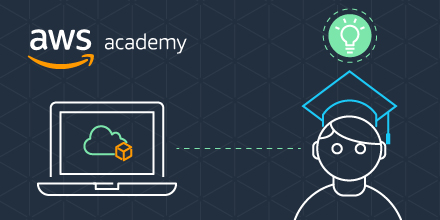

The fall term begins on 8/24/26 and ends on 12/13/26.
Courses are available on campus and online. Course material will be
delivered through the Canvas LMS.
CISB 11 – Computer Information Systems
Overview of computer information systems including computer
hardware, software, networking, programming, databases,
Internet, security, systems analysis, ethics, and problem
solving using business applications.
CISB course information.
Offered asynchronously online.
CISB 21 – Microsoft Excel
Spreadsheet concepts using Microsoft Excel: formats, formulas,
functions, business intelligence and macros to build and
maintain spreadsheets.
CISB course information.
Concepts and principles of cloud computing that shift
information systems from on-premises computing infrastructure to
highly scalable internet architectures. Topics includes cloud
computing technologies, cloud services (storage, servers and
software applications), cloud providers, industry cloud
practices, cloud careers, and industry demand for cloud skills.
Students analyze a variety of case studies to effectively
evaluate and assess the business and technical benefits of cloud
computing and cloud applications.
Offered asynchronously online.
CISN 71 is part of AWS Academy and helps you earn the AWS
Certified Cloud Practitioner certification.

This course is the first part of the CIS Professional in Cloud
Computing for Amazon Web Services certificate.
CISP 10 – Introduction to Object Oriented Programming
Object-oriented design, patterns, and use of Unified Modeling
Language (UML) in different programming languages that will
enable students to build large packages and business
applications. The course also covers Agile and Scrum
methodologies.
Learn more about our CISP courses.
This course is in-person on Tuesdays and Thursdays from
9:45am - 11:10am in 79-2280.
CISW 17 – HTML, CSS, and JavaScript Programming
Plan, program, implement, publish, and maintain web sites using
Hypertext Markup Language version 5 (HTML5), Cascading Style
Sheets version 3 (CSS3), and JavaScript. Includes working with
text, semantic, and multimedia objects, tables, forms,
Application Programming Interfaces (APIs), Document Object Model
(DOM), cross-browser compatibility, markup validation,
client-side interactivity, and principles of web page design,
web site construction, documentation, and publishing.
This course is part of the CIS Professional in Web Programming
certificate.
CISW 24/24L – Secure Web Server Programming in Python
This course will be offered in the spring.
Secure web programming to create user interfaces, extract
information and manage databases, manage files, format reports,
and access web servers using Python programming language.
Offered asynchronously online.
There is both a lecture and lab component for this course.
This course is part of the CIS Professional in Web Programming
certificate.
MUS 181 – Pop/Rock Band
This course will be offered in the spring.
The study, rehearsal, and public performance of commercial music
in band configurations. Styles covered will include but are not
limited to Pop, Rock, R&B, Country, and Hip Hop. The skills
needed to perform live in commercial music settings will be
emphasized. Combos will be made up of voice, guitar, keyboard,
bass, drum-set, and other traditional instruments. Different
literature will be studied each semester based on the ensemble
composition. This course is repeatable for credit the maximum
times allowable by regulation. Admission by audition.
Be prepared to perform one song at the first class meeting.
Bring lyrics / chords if needed. The audition may be solo or
with others present. Vocalists, have a "karaoke" track ready.
This course is in-person on Tuesdays from 4pm–7:30pm in
Room 109. There will be both a midterm and a final performance
(dates, times, location TBA).
Winter 2027
The winter intersession begins on and ends on .
CISB 11 – Computer Information Systems
Overview of computer information systems including computer hardware, software, networking, programming, databases, Internet, security, systems analysis, ethics, and problem solving using business applications.
Concepts and principles of cloud computing, including cloud technologies, service providers, infrastructure, and the technical and business benefits of cloud applications.
CISW 17 – HTML, CSS, and JavaScript Programming
Planning, programming, publishing, and maintaining websites using HTML5, CSS3, JavaScript, and web development techniques.
In person.
CISW 24 – Secure Web Server Programming in Python
Secure web programming in Python, including user interfaces, data management, file handling, reporting, and web server applications.
MUS 181 – Pop/Rock Band
The study, rehearsal, and public performance of commercial music
in band configurations. Styles covered will include but are not
limited to Pop, Rock, R&B, Country, and Hip Hop. The skills
needed to perform live in commercial music settings will be
emphasized. Combos will be made up of voice, guitar, keyboard,
bass, drum-set, and other traditional instruments. Different
literature will be studied each semester based on the ensemble
composition. This course is repeatable for credit the maximum
times allowable by regulation. Admission by audition.
Be prepared to perform one song at the first class meeting.
Bring lyrics / chords if needed. The audition may be solo or
with others present. Vocalists, have a "karaoke" track ready.
This course is in-person on Tuesdays from 4pm–7:30pm in
Room 109. There will be both a midterm and a final performance
(dates, times, location TBA).
Programs
CIS Professional in Web Programming
The CIS Professional Certificate in Web Programming provides
students the programming skills to create effective web pages
and web sites. The certificate offers a balanced set of classes
that prepares students to design, debug and implement both
client-side and server-side web programs. Emphasis is placed on
acquiring programming skills in various web programming,
scripting or markup languages such as JavaScript, HTML, DHTML,
XHTML, XML, CSS, ASP.NET, AJAX, SQL and Perl. Students will also
learn to configure and install an Apache web server in a Linux
or Windows system and access a MySQL database using PHP
programs. Opportunities available after the completion of this
certificate include web programming or web and database server
administration.
Required Courses
Course Prefix
Course Name
Units
CISW 17
HTML, CSS, and JavaScript Programming
3
CISW 24
Secure Web Server Programming in Python
3
CISW 24L
Secure Web Server Programming in Python Laboratory
0.5
CISW 31
Secure Web Server Programming in PHP
3
CISW 31L
Secure Web Server Programming in PHP Labortory
0.5
Total Units
10
CIS Professional in Cloud Computing for Amazon Web Services
The CIS Professional Certificate in Cloud Computing for Amazon
Web Services program prepares students to design solutions for
Infrastructure as a Service (IaaS) architectures by provisioning
computing instances, establishing virtual private networks,
managing databases and storage within a secure online
environment. Students produce dynamic solutions responsive to
information and computing technology workloads with on-demand
pay-as-you-go pricing allowing flexibility for small business,
entrepreneurship, and enterprise adoption. Industry
certifications are embedded to prepare for occupations in Cloud
Architect, Cloud Support Associate, Cloud Engineer or Cloud
Technicians. Some preparation in information technology or
computer programming is recommended.
Required Courses
Course Prefix
Course Name
Units
CISN 71
Introduction to Cloud Computing
3
CISN 72A
Cloud Computing Database Essentials in Amazon Web
Services
3
CISN 73A
Compute Engines in Amazon Web Services
3
CISN 74A
Security in Amazon Web Services
3
Elective
CISW 17, CISW 24/L, CISW 31/L, CISP21/L, or CISP 71/L